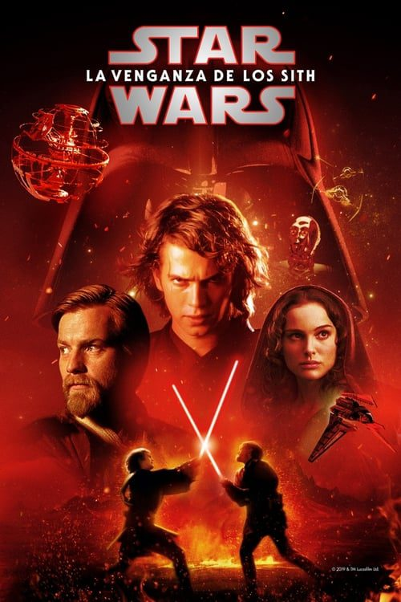
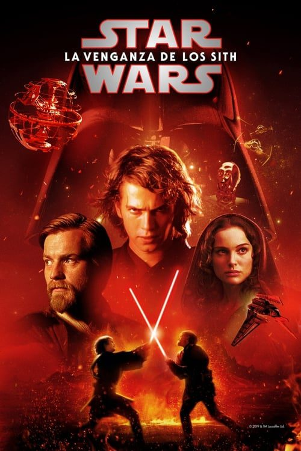
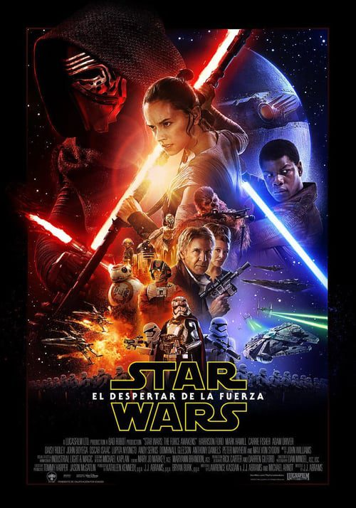
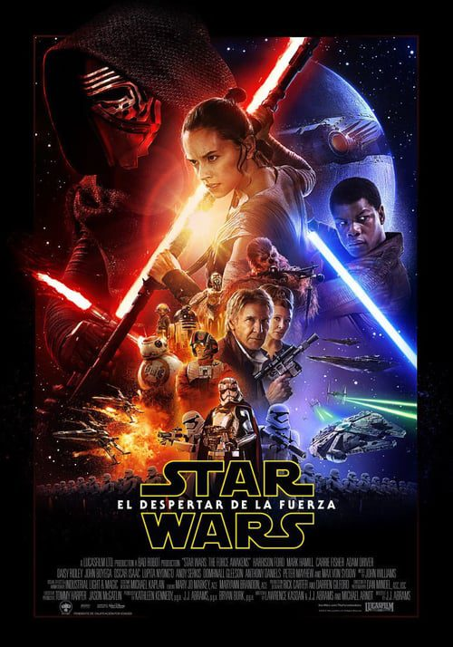

 



La escasa tropa Jedi lucha por mantener la libertad y devolver la paz a la Galaxia frente al aparentemente interminable ejército droide, clones diseñados genéticamente. A través de cientos de planetas, los Caballeros Jedi y los Separatistas combaten por el futuro de la Galaxia, pero el número de planetas que van cayendo en manos del Lado Oscuro cada vez es mayor a causa de los movimientos de los Separatistas. El terrible conflicto se agrava porque nuestros héroes se ven absorbidos por la confusión de guerra, mientras el Conde Dooku, el asesino Asajj Ventress, su maestro Darth Sidious, el General Grievous y una amplia galería de enemigos nunca antes visto también conspiran y se unen para derrotarlos.
Fuerzas imperiales ocupan un remoto planeta y están gobernando y arruinando la vida de sus habitantes con puño de hierro. Un equipo inteligente a bordo de la nave Ghost toma una postura en contra del Imperio, enfrentando a los villanos.
Ambientada treinta años antes, muestra la infancia de Darth Vader, el pasado de Obi-Wan Kenobi y el resurgimiento de los Sith, los caballeros Jedi dominados por el Lado Oscuro. La Federación de Comercio ha bloqueado el pequeño planeta de Naboo, gobernado por la joven Reina Amidala; se trata de un plan ideado por Sith Darth Sidious, que, manteniéndose en el anonimato, dirige a los neimoidianos, que están al mando de la Federación. El Jedi Qui-Gon Jinn y su aprendiz Obi-Wan Kenobi convencen a Amidala para que vaya a Coruscant, la capital de la República y sede del Consejo Jedi, y trate de neutralizar esta amenaza. Pero, al intentar esquivar el bloqueo, la nave real resulta averiada, viéndose así obligada la tripulación a aterrizar en el desértico y remoto planeta de Tatooine…
Diez años después de la invasión de Naboo, la galaxia está al borde de la guerra civil. Bajo el liderazgo de un Jedi renegado llamado Conde Dooku, miles de sistemas solares amenazan con separarse de la República Galáctica. Cuando se realiza un intento de asesinato contra la Senadora Padmé Amidala, la ex Reina de Naboo, el aprendiz Jedi de veinte años Anakin Skywalker es asignado para protegerla. En el transcurso de su misión, Anakin descubre su amor por Padmé y por su lado más oscuro. Pronto, Anakin, Padmé y Obi-Wan Kenobi se sienten atraídos por el corazón del movimiento separatista y el comienzo de las Guerras Clon.
Años después del inicio de las Guerras Clon, los nobles Caballeros Jedi lideran un masivo ejército clon en una batalla de galaxia contra los Separatistas. Cuando los siniestros Sith revelan un complot de mil años para gobernar la galaxia, la República se derrumba y de sus cenizas surge el malvado Imperio Galáctico. El héroe Jedi Anakin Skywalker es seducido por el lado oscuro de la Fuerza para convertirse en el nuevo aprendiz del Emperador: Darth Vader. Los Jedi están diezmados, mientras Obi-Wan Kenobi y el Maestro Jedi Yoda son forzados a esconderse. La única esperanza para la galaxia es la descendencia de Anakin: los hijos gemelos nacidos en secreto que crecerán y se convertirán en héroes.
Treinta años después de la victoria de la Alianza Rebelde sobre la segunda Estrella de la Muerte (hechos narrados en el Episodio VI: El retorno del Jedi), la galaxia está todavía en guerra. Una nueva República se ha constituido, pero una siniestra organización, la Primera Orden, ha resurgido de las cenizas del Imperio Galáctico. A los héroes de antaño, que luchan ahora en la Resistencia, se suman nuevos héroes: Poe Dameron, un piloto de caza, Finn, un desertor de la Primera Orden, Rey, una joven chatarrera, y BB-8, un androide rodante. Todos ellos luchan contra las fuerzas del Mal: el Capitán Phasma, de la Primera Orden, y Kylo Ren, un temible y misterioso personaje que empuña un sable de luz roja.
La Primera Orden se ha vuelto más poderosa y tiene contra las cuerdas a la Resistencia, liderada por la General Leia Organa. El piloto Poe Dameron encabeza una misión para intentar destruir un acorazado de la Primera Orden. Mientras tanto, la joven Rey tendrá que definir su futuro y su vocación, y el viejo jedi Luke Skywalker revaluar el significado de su vida.
Un año después de los eventos de «Los últimos Jedi», los restos de la Resistencia se enfrentarán una vez más a la Primera Orden, involucrando conflictos del pasado y del presente. Mientras tanto, el antiguo conflicto entre los Jedi y los Sith llegará a su clímax, lo que llevará a la saga de los Skywalker a un final definitivo. Final de la trilogía iniciada con «El despertar de la Fuerza».